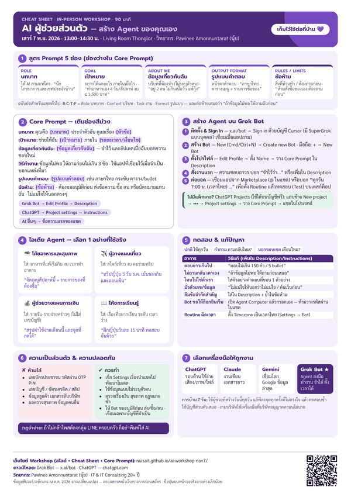

สิ่งที่จะได้
- เลือกเครื่องมือ AI ให้ถูกงาน (ChatGPT · Claude · Gemini · Grok Bot)
- เขียน prompt ให้ได้ผล และใช้ AI อย่างปลอดภัย
- สร้าง Agent ส่วนตัวของคุณเอง 1 ตัว พร้อม Core Prompt
IN-PERSON WORKSHOP · 90 นาที
รู้จัก ChatGPT · Claude · Gemini · Grok Bot แล้วลงมือสร้างผู้ช่วย AI สำหรับชีวิตประจำวันของคุณ — ไม่ต้องมีพื้นฐานเทคนิค
รายละเอียดงาน
Agenda
ติดตรงไหนยกมือถามได้ตลอด hands-on · ช่วงเวลาอาจปรับเล็กน้อยตามหน้างาน
Before we start
ชาร์จแบตให้เต็ม มือถือใช้ได้บางส่วน แต่การแก้ไข/ทดสอบ Routine ต้องใช้แอปเดสก์ท็อป
ดาวน์โหลดที่ x.ai/bot · macOS / Windows / Linux หรือแอป iPhone (iOS 18+) / Android (9+)
Sign in ด้วยบัญชี Cursor ผ่านเบราว์เซอร์ · ต้องมี Cursor Pro / Pro+ / Ultra / Teams หรือ เชื่อม SuperGrok / SuperGrok Plus / SuperGrok Heavy / X Premium+ แบบบุคคล (เชื่อมเมื่อแอปถาม)
⚠️ การเชื่อม SuperGrok/X Premium+ กับบัญชี Cursor ยกเลิกหรือย้ายไม่ได้ — ตรวจให้ถูกบัญชีก่อน
เปิดแอปแล้วทำ first-run tour ให้จบ (ระบบตั้งค่าคอมพิวเตอร์บนคลาวด์ให้ ใช้เวลาสักพัก) จนเห็นหน้า Meet a future teammate
Workshop นี้ใช้ Grok Bot และ ChatGPT เป็นหลัก · Claude และ Gemini เป็นทางเลือก ไม่ต้องติดตั้งก็ตามทัน
Grok Bot
สร้าง Agent ใน Part 2
ติดตั้ง: x.ai/bot
Sign in: บัญชี Cursor
ChatGPT
Part 1 + แผนสำรอง (ฟรี)
Sign in: chatgpt.com
แอป: chatgpt.com/download
Claude
Gemini
ChatGPT Projects ใช้ได้บนบัญชี Free — ล็อกอิน chatgpt.com ไว้ล่วงหน้า แล้วในวันงานจะใช้ Core Prompt เดียวกัน:
ไม่มีการตั้งเวลา/ลงมือทำงานแทนแบบ Grok Bot แต่ฝึกเขียน Agent ได้ครบ
วิทยากร
ผู้เชี่ยวชาญด้าน IT และ IT Consulting ประสบการณ์กว่า 20 ปี
เป้าหมายวันนี้: ทุกคนกลับบ้านพร้อม AI ผู้ช่วย 1 ตัวที่ใช้ได้จริงพรุ่งนี้
Part 2 · Template
บทบาท: คุณคือ [บทบาท] ประจำตัวฉัน ดูแลเรื่อง [หัวข้อ] เป้าหมาย: ช่วยให้ฉัน [เป้าหมาย] ภายใน [ระยะเวลา/เงื่อนไข] ข้อมูลเกี่ยวกับฉัน: [ข้อมูลเกี่ยวกับฉัน] — จำไว้ และอัปเดตเมื่อฉันบอกความชอบใหม่ วิธีทำงาน: ข้อมูลไม่พอ ให้ถามก่อนไม่เกิน 3 ข้อ · ใช้แอปที่เชื่อมไว้เมื่อจำเป็น · บอกแหล่งที่มา รูปแบบคำตอบ: [รูปแบบคำตอบ] เช่น ภาษาไทย กระชับ ตาราง/bullet ข้อห้าม: [ข้อห้าม] · ต้องขออนุมัติก่อน ส่งข้อความ ซื้อ ลบ หรือนัดหมายแทนฉัน · ไม่แน่ใจให้บอกตรงๆ
ตัวอย่าง Routine (Grok Bot): “ทุกวันเวลา 7:00 น. (เวลาไทย) ส่งเมนูวันนี้ 3 มื้อ + ของที่ต้องเตรียม ในแชตนี้ ถ้าไม่รู้ว่าในตู้เย็นมีอะไร ให้ถามฉันแทนการเดา ห้ามสั่งซื้อของเอง”
Resources
สไลด์ทั้งหมด 24 หน้า: รู้จัก AI 4 ตัว ขั้นตอนสร้าง Agent บน Grok Bot และแผนสำรอง
⬇ ดาวน์โหลด PDF
สรุปสูตร Prompt, Core Prompt, ขั้นตอนสร้าง Agent, ตารางแก้ปัญหา และเรื่องความเป็นส่วนตัว — พิมพ์เก็บไว้ข้างคอมได้เลย
⬇ ดาวน์โหลด PDFFAQ
ได้ค่ะ Workshop นี้ออกแบบมาสำหรับคนทั่วไป ใช้ภาษาคน ไม่ต้องเขียนโค้ด ใครเคยใช้แค่ Copilot ที่ออฟฟิศก็ตามทันแน่นอน ติดตรงไหนระหว่าง hands-on ยกมือได้เลย
Grok Bot ไม่ฟรี — ใช้ได้กับ Cursor Pro / Pro+ / Ultra / Teams หรือเชื่อม SuperGrok / SuperGrok Plus / SuperGrok Heavy / X Premium+ แบบบุคคล มี free trial แบบเครดิตใช้งาน (มีกรอบ 7 วัน งานใหญ่อาจใช้เครดิตหมดในครั้งเดียว) ส่วนสิทธิ์ trial ในไทยโปรดเช็กอีกครั้ง
ไม่อยากจ่าย? ใช้ ChatGPT Projects บนบัญชีฟรีเป็นแผนสำรองได้ ใช้ Core Prompt เดียวกัน ไม่ตกหล่นค่ะ
Grok Bot ใช้บัญชี Cursor ในการ Sign in จึงต้องมีบัญชี Cursor แต่ไม่จำเป็นต้องซื้อแพ็กเกจ Cursor — เชื่อม SuperGrok (บุคคล) เมื่อแอปถามได้เลย ระวัง: การเชื่อมยกเลิก/ย้ายบัญชีไม่ได้ และ SuperGrok Lite / Team / Enterprise ใช้ไม่ได้
หมายเหตุ: แอปแชต Grok กับ Grok Bot เป็นคนละแอป ลิมิตในแอป Grok ไม่เกี่ยวกับ Grok Bot
ได้บางส่วน — มีแอป Grok Bot บน iPhone (iOS 18+) และ Android (9+) สร้าง Bot และแชตได้ แต่การแก้ไขและทดสอบ Routine ต้องใช้แอปเดสก์ท็อป จึงแนะนำให้นำโน้ตบุ๊กมาค่ะ
แนะนำให้ใช้บัญชีส่วนตัว และไม่ใส่ข้อมูลลูกค้าหรือเอกสารลับของบริษัท ข้อมูลงานให้ใช้เครื่องมือที่บริษัทอนุญาต (เช่น Copilot องค์กร) ตามนโยบายบริษัท กฎจำง่าย: ถ้าไม่กล้าโพสต์ลงกลุ่ม LINE ครอบครัว ก็อย่าพิมพ์ใส่ AI
ลองอัปเดตแอป แล้ว Sign out / Sign in ใหม่ · ถ้ามือถือวนลูป ให้ Sign in บนเดสก์ท็อปก่อน · บัญชี Cursor ที่ใช้ Legacy Privacy Mode ต้องเปลี่ยนการตั้งค่าข้อมูลก่อนจึงจะเริ่มใช้ Grok Bot ได้ · ยังไม่ได้ มาช่วงต้อนรับ & เตรียมเครื่อง 13:00 น. หรือยกมือระหว่าง hands-on เพื่อให้ช่วยดูได้ค่ะ
ได้ค่ะ วาง Core Prompt เป็นข้อความแรกของแชต แล้วคุยต่อในแชตเดิมเสมอ (ต้องวางใหม่ทุกแชต) ถ้าเป็น Copilot ของบริษัท ห้ามใส่ข้อมูลส่วนตัว
AI ผู้ช่วย 1 ตัวที่ตั้งค่าเสร็จแล้ว, Core Prompt สำหรับสร้างตัวต่อไป สไลด์ PDF และ Cheat Sheet 1 หน้า (ดาวน์โหลดได้จากหน้านี้) การบ้าน: ใช้ผู้ช่วยตัวนี้จริง 7 วัน แล้วปรับ instructions ทุกครั้งที่ไม่ตรงใจ